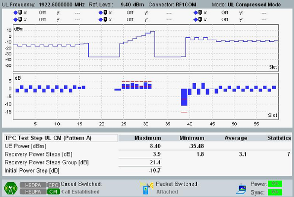

This section describes the results in UL compressed mode.
The result view displays two diagrams and a table with statistical results.

The diagrams show the measured UE power vs slot and the corresponding power steps between the slots. For a detailed description, refer to "Monitor Mode".
The number of measured slots is fixed. Measurement interval includes two compressed mode frames plus one preceding and one succeeding frame.
The maximum and minimum output power of the UE is determined from the UE power vs slot diagram. The maximum, minimum and average recovery power step values are displayed within the table. The column "Statistics" indicates how many recovery power step values have been considered for the statistical evaluation. Also the recovery power step group and initial power step P0 is displayed. The recovery power step group P1 to P7 represents the value for the aggregate UE TX power in the recovery period. This period comprises the 7 rising or falling power steps after each gap, see "TPC Test Step UL CM Setup".
The maximum and minimum output power of the UE is determined from the UE power vs slot diagram. The maximum and minimum power steps for nonCM-CM swapping are displayed within the table. Also the initial power step P0 is displayed.
For query of the results via remote control, see "Measurement Results".